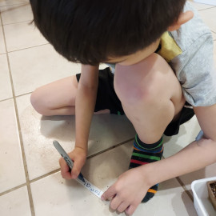
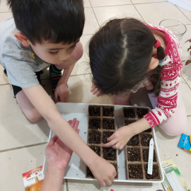
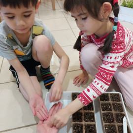

Protected from fungus gnats - 11 MarPlanted by Olivia and Harrison: strawberry, cherry tomato, and pumpkin seeds - 11 MarPlanted by Olivia and Harrison: strawberry, cherry tomato, and pumpkin seeds - 11 Mar

Labeling - 11 Mar

Sowing cherry tomato seeds - 11 Mar

Sowing cherry tomato seeds - 11 Mar 2022
Updates:
11 Mar 2022: Harrison and Olivia spring 2022 gardening season start now. I picked strawberry, cherry tomato, and pumpkin seeds for them. Olivia did prepare the tray for previous day's lemon basil seeds, but this one is prepared by me. The cherry tomato seeds are from McKenzie. Less than 20 seeds in the package, planted all. Planted in Jiffy small pots with starter soil mixed with vermiculite.